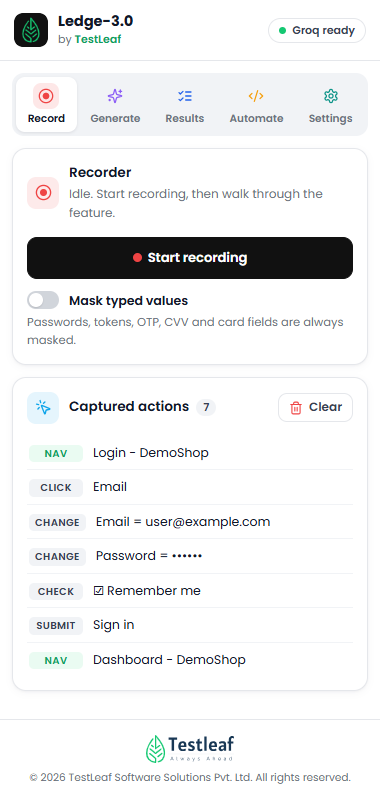
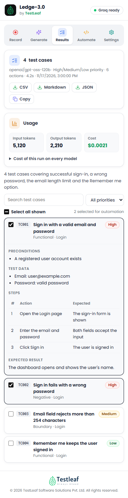
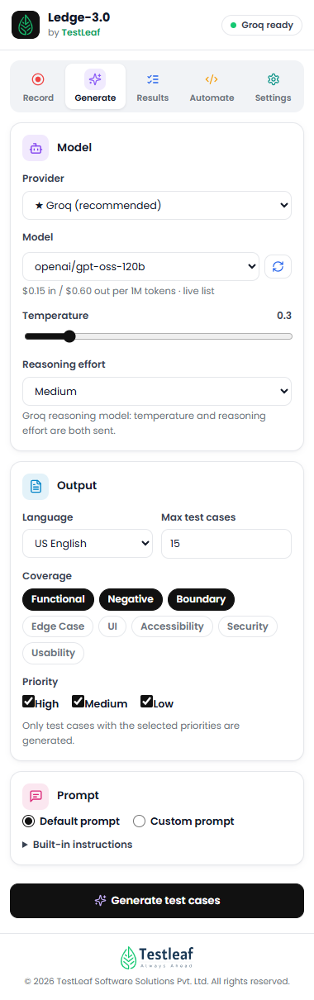

Ledge-3.0
UI guide: features, screens and where the code lives
Ledge-3.0 is a Chrome extension that records a user journey in the browser, turns it into structured manual test cases with an AI model, and converts the cases you pick into Playwright or Selenium scripts.



TestLeaf Software Solutions Pvt. Ltd.Version 1.1.0 · November 2026
1
How it works at a glance
The app lives in Chrome's side panel. You work left to right through four tabs; Settings is a one-time setup.
RecordWalk the journeyClick and type on the real page. Every action is captured.
GeneratePick model & optionsChoose coverage, priorities and language, then generate.
ResultsReview test casesSearch, filter, export, and tick cases to automate.
AutomateGet a scriptPlaywright or Selenium code that follows your style.
Settings Add your Groq API key once. Groq is the recommended provider; OpenAI, Anthropic, Gemini and Inception Labs also work.
Where things live in the project
| Folder / file | What it contains |
|---|
| manifest.json | The extension definition: name, version, icons, permissions and the API domains it may call. |
| sidepanel/ | Everything you see. The panel layout (HTML), the look (CSS) and one script per tab. |
| content/content.js | Runs inside the web page you test: captures clicks and typing and shows the on-page "recording" badge. |
| background/ | The engine (service worker): stores recordings and keys, builds prompts, calls the AI model, parses replies. |
| background/llm/ | One adapter per AI provider (providers/groq.js, openai.js, …) plus timeouts and error handling. |
| background/prompts/ | The instructions sent to the model for test cases (prompt.js) and for scripts (automationPrompt.js). |
| shared/ | Names and defaults used by both the panel and the engine (constants.js), and the list of pages Chrome won't let us record (blocked.js). |
| icons/ · fonts/ | Toolbar icon, TestLeaf logo, and the bundled Poppins font. |
| docs/ | This guide (docs/guide/), the user manual and a small demo shop for practice. |
How a request travels
| Step | What happens | File |
|---|
| 1 | You click a button in the side panel. | sidepanel/*-tab.js |
| 2 | The panel sends a message to the background engine. | background/sw.js |
| 3 | The engine builds the prompt and calls the provider (Groq by default). | background/generate.js, background/llm/callModel.js |
| 4 | The reply is checked, repaired if needed, saved and shown in the panel. | background/jsonRepair.js, sidepanel/generate-tab.js |
2
Header, tabs and the Record tab
Record tab with captured actions
While recording: the button and timer turn red
What you see
- Header: the Ledge-3.0 name with the TestLeaf mark. The pill on the right shows Groq ready once a Groq key is saved (amber "Add Groq key" otherwise). Clicking it opens Settings.
- Tab bar: Record, Generate, Results, Automate, Settings. Each tab has its own icon colour; the active tab is raised in white.
- Recorder: Start recording, then use the web page normally. The button turns red (Stop recording) with a running timer, and a small "Ledge-3.0 · recording" badge appears on the page.
- Mask typed values: hides what you type in the captured list. Passwords, tokens, OTP, CVV and card numbers are always masked.
- Captured actions: every navigation, click, change, selection and form submit, in order. Clear empties the list.
Chrome does not allow recording on its own pages (chrome://, the Web Store, the new-tab page). On those pages the panel shows a message and the Record button is disabled.
Files behind this screen
| sidepanel/sidepanel.html | Layout of the header, tabs and every card |
| sidepanel/sidepanel.js | Tab switching, Start/Stop, timer, captured-actions list |
| sidepanel/settings-tab.js | The "Groq ready" pill in the header |
| content/content.js | Captures actions on the page; on-page recording badge |
| background/recorder.js | Starts/stops recording and stores the actions |
| shared/blocked.js | Pages that cannot be recorded, and the message shown |
7
Models, look and quick reference
Groq models offered
Only models that suit this job are shown: long structured test-case output and code generation from a large prompt. Retired, enterprise-only, speech and safety-classifier models are hidden.
| Model | Status | Context / max output | Price per 1M tokens (in / out) | Use it for |
|---|
openai/gpt-oss-120b | Default | 131K / 65K | $0.15 / $0.60 | Best quality for test cases and scripts |
openai/gpt-oss-20b | Production | 131K / 65K | $0.075 / $0.30 | Faster and cheaper; small journeys |
qwen/qwen3.8-27b | Preview | 131K / 16K | $0.80 / $4.00 | Alternative; preview models can be withdrawn |
Model list: background/models.js · prices: background/pricing.js · Groq call: background/llm/providers/groq.js. Checked against Groq's model page on 17 Nov 2026.
Look and feel
- White background, always, even if the computer uses dark mode.
- Buttons are black with white text.
- Icons each have their own colour: record red, generate violet, results blue, automate amber, settings teal.
- Status colours: red while recording, green for success, green progress bar while working.
- Font: Poppins, bundled with the app.
Files
| sidepanel/sidepanel.css | Colours, icon colour list, layout |
| sidepanel/sidepanel.html | The icon set (top of the file) |
| fonts/ · icons/ | Poppins, toolbar icon, logo |
"I want to change…"
| Change | Edit |
|---|
| Text or layout of a screen | sidepanel/sidepanel.html |
| A colour or an icon colour | sidepanel/sidepanel.css |
| Which models appear | background/models.js |
| A model's price | background/pricing.js |
| What the AI is told | background/prompts/ |
| Default settings | shared/constants.js |
| App name, version, icon | manifest.json |
| Export file names | sidepanel/export.js |
Install and update
- Open
chrome://extensions and turn on Developer mode.
- Click Load unpacked and select the folder that contains
manifest.json.
- Pin Ledge-3.0 from the puzzle-piece menu, then click its icon to open the side panel.
- Go to Settings, paste your Groq key, click Save key, then Test key.
- After changing any file, click the reload icon on the Ledge-3.0 card and reopen the panel.